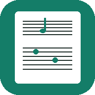

Partituras
Importar PDF
Nueva en blanco
Más
Más recientes
Título A-Z
Fecha de creación
Solo favoritas ★
← Biblioteca
−
100%
+
Ajustar
📑 Hojas
🔓 Editando
↶
↷
Vídeo
Exportar PDF
↖ Selec.
T Texto
✎ Lápiz
╱ Línea
➚ Flecha
◯ Elipse
▭ Tapar
⌫ Borrador
⬚ Zona
📋 Pegar
🖼 Imagen
𝄚 Pauta
Traste
Mástil
Ver notas
Acordes ▾
Fila de acordes
Nuevo acorde
Dedo
1
2
3
4
Bucle
Técnica ▾
H
P
sl.
~~~
Arm.
↓
↑
C.II
C.V
C.VII
Intro
Estrofa
Estribillo
Solo
Texto
Grosor
Color
Tapar
Borrador
Editar
Duplicar
Copiar
Cortar
Mover a hoja…
Al frente
Al fondo
Eliminar
Zona: arrástrala para moverla · Ctrl+arrastrar copia
Copiar
Cortar
Duplicar
Borrar
📋 Pegar
Cerrar
Toca un acorde y luego la página donde quieras colocarlo.
← Biblioteca
Más
Copias
Ajustes
Ideas de mejora
Ayuda
Hay una versión nueva.
Actualizar